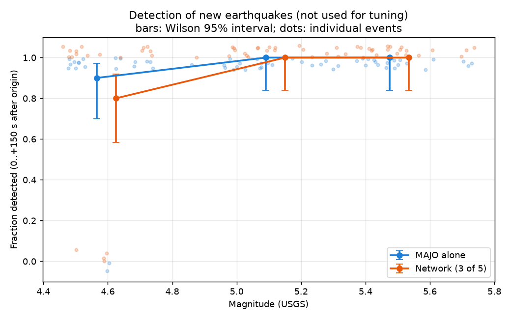

Detecting earthquakes with one seismometer, confirmed by four neighbours
A simple STA/LTA detector runs on each of five seismic stations in central Japan. An event is reported only when at least 3 of the 5 stations raise an alarm within 60 seconds of each other. Below you can replay real recordings and see the results of an independent test on data that was not used to tune the system.
Replay a recording
Pick a case, press Play. Station dots turn red when a station raises an alarm; coloured rings appear when the network confirms an event. The detections were computed beforehand by the project's own server code on the recorded data; the page only plays them back. The list includes failures on purpose.
What each station recorded
Confirmed network events
Station alarms
How it works
Four steps, the same on every station and in every replay.
Keep the 1–8 Hz band of the vertical ground motion, where earthquake waves are strong and slow ocean noise is weak.
Compare the average signal level of the last 1 s (short-term average) with the last 30 s (long-term average). Background noise gives about 1.
When the ratio goes above 10, the station raises an alarm. Alarms closer than 60 s are merged into one.
Alarms from different stations within 60 s form an event. It is confirmed only when at least 3 of the 5 stations took part.
Why a network? One station is easily fooled by local disturbances: traffic, wind, a sensor glitch. A real earthquake shakes several stations within seconds of each other, so requiring three of them removes most false alarms. In the independent test the single station raised about 0.9 false alarms per hour, the network about 0.33.
Stations: IU.MAJO (Matsushiro, the reference station) and four neighbours 130–175 km away: JP.JGF, JP.JSD, G.INU and PS.TSK. Waveforms come from the EarthScope FDSN web services; the earthquake catalogue is USGS.
What the replay is: the recordings were cut into 10-second pieces and fed, in time order, to the project's server (FastAPI + SQLite). The server's answers (when each alarm was known, when each event became confirmed) were saved, and this page plays them back. The streaming detector stays silent for the first 60 s of a recording while its 30-s window fills up.
Results
Two sets of numbers. The first comes from the data used to choose the settings and is therefore optimistic. The second is an independent test on new earthquakes and new quiet hours, with definitions fixed before it was run.
Independent test by magnitude and distance
Share of earthquakes detected. Bars show the 95% Wilson interval; with 20 events per row, the intervals are wide.

All 60 earthquakes of the independent test
Limitations
What these numbers do not show.
- Not tested live. Everything here is recorded data. Delays, gaps and dropped connections of a real-time feed have not been tested.
- Smaller earthquakes were not tested. The independent test covers M4.5–5.7. Even the weakest group was still detected 80–90% of the time, so the lowest magnitude the system can see is still unknown.
- Hard cases were left out. Earthquakes with another M4+ event within about 10 minutes, and aftershocks within 30 minutes of an M5.5+ event, were excluded on purpose. Real aftershock sequences will be harder.
- “False” may not be false. Quiet hours were checked only against the USGS catalogue (M4+ in the region). Some network events in those hours may be real small earthquakes that the catalogue does not list.
- Few nearby events. Only 2 of the 60 new earthquakes were closer than 150 km to MAJO; most were 300–1000 km away.
- Small samples, clustered alarms. False alarms come in bursts, so the per-hour rates are approximate (intervals from resampling whole hours).
- A small network. With three of the five stations down, no event can be confirmed. The 2011 Tohoku earthquake had data from only 3 stations and was confirmed with no margin.
- Confirmation speed was not measured systematically. In the replayed earthquakes above, the network confirmed the event about 30–80 s after the origin time (epicentres 133–417 km from MAJO); the further the earthquake, the later.